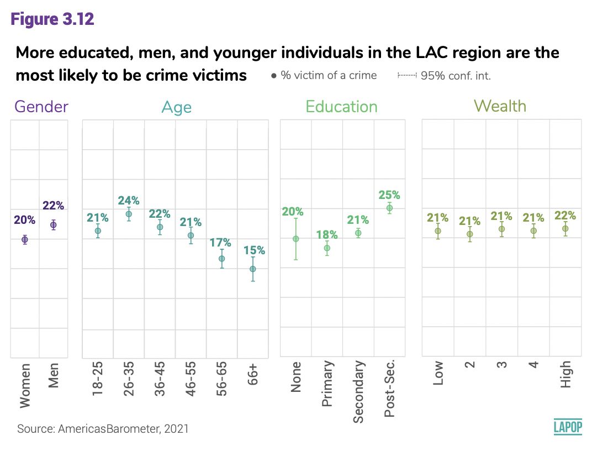
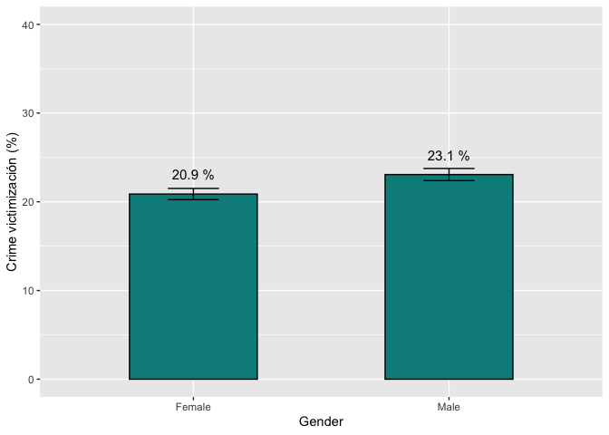
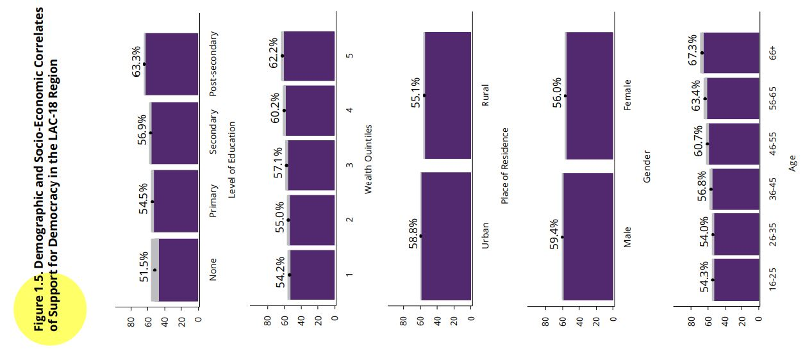
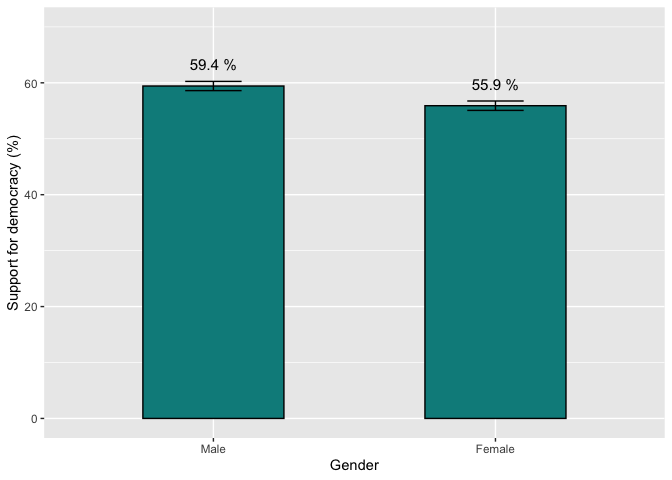
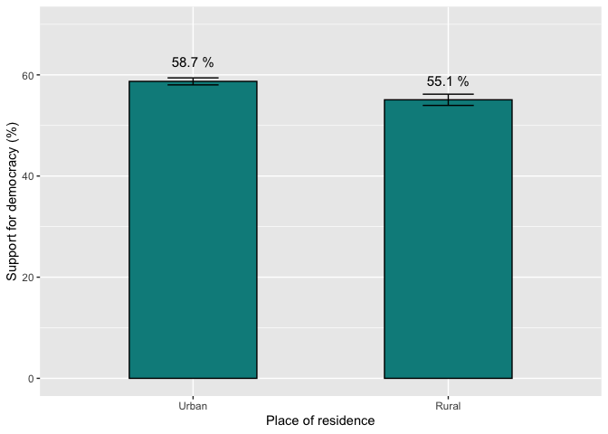

Introduction
In this section we will see how to compare two means and know if the
differences can be inferred to the population, through the means
comparison t-test. For that, we will continue to use the latest regional
report “The Pulse of Democracy”, available here,
where the main findings of the 2018/19 round of the AmericasBarometer
are presented. This report shows the results on support for electoral
democracy, a variable that is crossed with some other sociodemographic
variables such as gender or place of residence (see Figure 1.5).
About the dataset
The data we are going to use should be cited as follows: Source:
AmericasBarometer by the Latin American Public Opinion Project (LAPOP),
wwww.LapopSurveys.org. This section reloads a trimmed database. It is
recommended to clean the Environment before starting this section.
This database is hosted in the “materials_edu” repository of the
LAPOP account on GitHub. Using the rio library and the
import command, you can import this database from this
repository. In addition, the data from countries with codes less than or
equal to 35 are selected, that is, the observations of the United States
and Canada are eliminated.
library(rio)
lapop18 = import("https://raw.github.com/lapop-central/materials_edu/main/LAPOP_AB_Merge_2018_v1.0.sav")
lapop18 = subset(lapop18, pais<=35)
We also load the dataset for the 2021 round of the
AmericasBarometer.
lapop21 = import("https://raw.github.com/lapop-central/materials_edu/main/lapop21.RData")
lapop21 = subset(lapop21, pais<=35)
Crime victimization
Victimization for crime is measure with the variable “vic1ext”. The
question is worded: “Now, changing the subject, have you been a victim
of any type of crime in the past 12 months? That is, have you been a
victim of robbery, burglary, assault, fraud, blackmail, extortion,
violent threats or any other type of crime in the past
12 months?”.
This variable is coded 1 “Yes” and 2 “No”. To be able to replicate
the results in Figure 3.12, we have to recode this variable. As we
indicate in a previous section, this recodification allows to calculate
the percentage of victims for crime with the command mean.
The results indicate that 22% of citizens report having been victim of
crime.
library(car)
lapop21$crime = car::recode(lapop21$vic1ext, "1=100; 2=0")
mean(lapop21$crime, na.rm=T)
## [1] 21.92233
Figure 3.12 shows a comparison of victimization for crime crossed by
four sociodemographic variables: gender, age, education and quintiles of
wealth.

To replicate difference between gender, we have to recode variable
“q1tb” and then declare this new variable as factor.
lapop21$gender = car::recode(lapop21$q1tb, "1=2; 2=1; 3=1")
lapop21$gender = as.factor(lapop21$gender)
levels(lapop21$gender) = c("Female", "Male")
table(lapop21$gender)
##
## Female Male
## 31487 29174
In the same way as in the section about confidence intervals, we use
the command tapply to calculate the percentage of crime
victimization by groups of gender.
tapply(lapop21$crime, lapop21$gender, mean, na.rm=T) #Para género
## Female Male
## 20.87127 23.06949
To reproduce the bar plot, including the confidence intervals, first
we have to produce a table that saves the percentages for each group and
the upper and lower limits of the confidence intervals. We can do this
with the command group.CI of the library Rmisc
.
With this table, we can use the library ggplot to
reproduce the first pane of Figure 3.12. Results are not the same due to
we have not used survey weights.
library(Rmisc)
crxgen = group.CI(crime~gender, lapop21)
library(ggplot2)
graf3.12a = ggplot(crxgen, aes(x=gender, y=crime.mean))+
geom_bar(width=0.5, fill="darkcyan", colour="black", stat="identity")+
geom_errorbar(aes(ymin=crime.lower, ymax=crime.upper), width=0.2)+
geom_text(aes(label=paste(round(crime.mean, 1), "%")), vjust=-1.5, size=4)+
xlab("Gender") + ylab("Crime victimización (%)")+
ylim(0, 40)
graf3.12a

We can compare visually the confidence intervals between groups in
this graph. Because they do not overlap, we can conclude that the
difference between men and women in crime victimization is statistically
significant (initially).
This result, however, has to be confirmed formally with a
significance test that we will see below.
Support for Democracy
Support for democracy, variable “ING4”, measured on a scale from 1 to
7, where 1 means “strongly disagree” and 7 means “strongly agree”, has
to be recoded. According to the report “Responses are considered in the
portion of the scale that indicates agreement, this is the values from 5
to 7, to indicate the percentage that supports democracy” (p. 11). The
command mean is used to report the regional average of
support for democracy. We specify na.rm=T so that the
command does not take missing values into account in the
calculation.
library(car)
lapop18$ing4r = car::recode(lapop18$ing4, "1:4=0; 5:7=100")
mean(lapop18$ing4r, na.rm=T)
## [1] 57.67924
It is observed that in general, 57.7% of those interviewed support
democracy in the set of countries evaluated in 2018.
Factors associated with support for democracy
Figure 1.5 shows how support for democracy varies by sociodemographic
groups. In particular, the results are presented for the variable place
of residence that distinguishes the urban and rural areas, and for the
variable gender, which distinguishes between men and women.

As we saw in the section on confidence intervals, the percentage of
support for each group can be calculated. First, we are going to create
new factor variables for place of residence and gender, which are
imported as numeric variables. These new variables are then labeled.
lapop18$gender = as.factor(lapop18$q1)
levels(lapop18$gender) = c("Male", "Female")
lapop18$ambito = as.factor(lapop18$ur)
levels(lapop18$ambito) = c("Urban", "Rural")
As in the section on confidence intervals, we use the command
tapply to calculate average support for democracy by gender
and urban/rural setting.
tapply(lapop18$ing4r, lapop18$gender, mean, na.rm=T) #To gender
## Male Female
## 59.42899 55.90933
tapply(lapop18$ing4r, lapop18$ambito, mean, na.rm=T) #To urban-rural
## Urban Rural
## 58.71664 55.07453
We can reproduce the bar plots that compare the average support for
democracy between groups by gender and urban/rural. First, for gender,
you have to create a table with the data of the mean and the limits of
the confidence intervals for each group. We will do this with the
command group.CI which is part of the library
Rmisc. We save this data in an R object called
“sdxgen”.
This table saves the results of the mean support for democracy for
each group (“ing4r.mean” column) and the upper and lower limits of the
confidence intervals (“ing4r.lower” and “ing4r.upper” columns). It also
saves the “gender” column with the names of the groups.
Figure 1.5 is reproduced using the command ggplot in the
same way as in previous sections.
library(Rmisc)
sdxgen = group.CI(ing4r~gender, lapop18)
library(ggplot2)
graf1.5 = ggplot(sdxgen, aes(x=gender, y=ing4r.mean))+
geom_bar(width=0.5, fill="darkcyan", colour="black", stat="identity")+
geom_errorbar(aes(ymin=ing4r.lower, ymax=ing4r.upper), width=0.2)+
geom_text(aes(label=paste(round(ing4r.mean, 1), "%")), vjust=-1.5, size=4)+
xlab("Gender") + ylab("Support for democracy (%)")+
ylim(0, 70)
graf1.5

A similar graph can be generated that presents the percentage of
support for democracy and the confidence intervals by urban and rural
groups.
sdxamb <- group.CI(ing4r~ambito, lapop18)
library(ggplot2)
graf1.5_2 = ggplot(sdxamb, aes(x=ambito, y=ing4r.mean))+
geom_bar(width=0.5, fill="darkcyan", colour="black", stat="identity")+
geom_errorbar(aes(ymin=ing4r.lower, ymax=ing4r.upper), width=0.2)+
geom_text(aes(label=paste(round(ing4r.mean, 1), "%")), vjust=-1.5, size=4)+
xlab("Place of residence") + ylab("Support for democracy (%)")+
ylim(0, 70)
graf1.5_2

The LAPOP Lab generally presents the confidence intervals of each
group in its graphs. These gray bars on the report serve as a quick way
to compare. If the bars overlap, that would mean that there would be no
statistically significant differences between the groups. On the
contrary, if the gray bars do not overlap, it would mean that the
difference between the groups is significant at 95% confidence. However,
to check these conclusions, a statistical test has to be calculated.
When the comparison is between the means of two groups, the appropriate
statistical test is the t-test for differences of means. In this section
we are assuming that we can treat the variable “jc15a” and “ing4r” as
numerical variables, from which the mean and standard deviation can be
calculated, although these variables are strictly a nominal qualitative
type.
T-test
Student’s t tests the following hypotheses:
\[
H_0: µ_1 = µ_2
\]
\[
H_a: µ_1 ≠ µ_2
\]
The t-test statistic is calculated with a standard error that depends
on whether the variances appear different or whether the variances
appear equal. To determine this condition, the first thing is to
calculate a test of equality of variances between the groups, called
Levene’s test.
\[
H_0: var_1 = var_2
\]
\[
H_a: var_1 ≠ var_2
\]
T-test for the difference in means of crime victimization by
gender
The first step is to run the Levene test to evaluate if variances are
equal or different, which is a condition that then is used in the
t-test. To run this test, we use the library DescTools that
includes the command LeveneTest.
library(DescTools)
LeveneTest(lapop21$crime, lapop21$gender)
Because the p-value (Pr(>F)) is lower than 0.05, we reject the
null hypothesis and affirm that variances are different. With this
result, we can run the command t.test, which null
hypothesis indicates that means of crime victimization are equal between
men and women, and the alternative hypothesis indicates that both means
are different. We include the specification var.equal = F
because the results of the Levene test indicates that variances seem
different.
t.test(crime ~ gender, data = lapop21, var.equal=F)
##
## Welch Two Sample t-test
##
## data: crime by gender
## t = -4.6147, df = 29850, p-value = 3.952e-06
## alternative hypothesis: true difference in means between group Female and group Male is not equal to 0
## 95 percent confidence interval:
## -3.131886 -1.264558
## sample estimates:
## mean in group Female mean in group Male
## 20.87127 23.06949
The p-value is lower than 0.05. With this result, we can reject the
null hypotesis and affirm the alternative hypothesis that means between
both groups are different. We conclude that men report a higher crime
victimization than women in the region.
T-test for the difference in means of support for democracy by
gender
The first step is to do the Levene test. To run this test, the
library DescTools is used, which includes the command
LeveneTest.
library(DescTools)
LeveneTest(lapop18$ing4r, lapop18$gender)
As the p-value (Pr(>F) is less than 0.05, the null hypothesis is
rejected and it is stated that the variances are different. With this
result, the command t.test can be run, whose null
hypothesis indicates that the means of support for democracy are the
same between men and women and the alternative hypothesis indicates that
both means are different. The specification var.equal = F
is included due to the result of Levene’s test indicating that the
variances appear different.
t.test(ing4r ~ gender, data = lapop18, var.equal=F)
##
## Welch Two Sample t-test
##
## data: ing4r by gender
## t = 5.8633, df = 27046, p-value = 4.59e-09
## alternative hypothesis: true difference in means between group Male and group Female is not equal to 0
## 95 percent confidence interval:
## 2.343068 4.696255
## sample estimates:
## mean in group Male mean in group Female
## 59.42899 55.90933
The value of the p-value (4.59e-09) is less than 0.05, so the null
hypothesis is rejected and the alternative is affirmed, concluding that
the differences are different in the population at 95% confidence.
T-test for the difference in means of support for democracy by
domain groups
In the same way as in the previous case, Levene’s test is first run
to analyze the equality of variances.
LeveneTest(lapop18$ing4r, lapop18$ambito)
Again, the p-value is less than 0.05, which rejects the hypothesis of
equality of variances. The t-test is then run with the specification of
different variances.
t.test(ing4r ~ ambito, data = lapop18, var.equal=F)
##
## Welch Two Sample t-test
##
## data: ing4r by ambito
## t = 5.4543, df = 14056, p-value = 5e-08
## alternative hypothesis: true difference in means between group Urban and group Rural is not equal to 0
## 95 percent confidence interval:
## 2.333228 4.950988
## sample estimates:
## mean in group Urban mean in group Rural
## 58.71664 55.07453
In this comparison, the p-value is also less than 0.05, so the null
hypothesis is rejected and it is found that the differences in support
for democracy between urban and rural areas is statistically significant
at 95% confidence. As the report indicates, “Considering the region as a
whole, Figure 1.5 shows statistically significant relationships between
five demographic variables and socioeconomic groups (education, wealth,
urban/rural residence, gender, and age) and support for democracy”
(p. 13). In this section we have checked these statistical results for
demographic variables of two groups, such as gender and urban/rural
residence.
Summary
In this section we have described and plotted a variable, such as
support for democracy, by groups of other variable, such as gender.
Starting from the comparison of confidence intervals, we formalize this
comparison with a statistical test, such as the t-test, to conclude
whether the differences between groups are statistically
significant.
Calculations including survey weights
For crime victimization
To calculate the difference of means including a survey weight, we
can use the library survey. This library requires a change
in the dataset, in the same way as we did in this section.
Once we fit the dataset, we have to define the sampling design with
the command svydesign and we save this design in an object
called “design21”.
library(survey)
design21 = svydesign(ids = ~upm, strata = ~strata, weights = ~weight1500, nest=TRUE, data=lapop21)
Now we can calculate the table of the mean of crime victimization for
each group of gender, including the survey weight. In the same way as we
see in the section on confidence
intervals, we use the command svyby.
crxgen.w = svyby(~crime, ~gender, design21, svymean, na.rm=T, vartype = "ci")
crxgen.w
It should be noted that these results are equal to those presented in
Figure 3.12. With this table we can proceed to replicate the left panel
of this figure, in the same manner as we did above in this section.
For the calculation of the t-test of difference of means, the library
survey has a native command, called svyttest,
that allows to perform this test. However, we do not have a command to
evaluate the variances, as the Levene test. The command
svyttest is a development of a more general command for
generalized linear models, which assume variances are equal. If we would
like to validate this assumption, we can do it manually, as explained in
this link.
Here we are going to proceed as if assumption is correct. We observe
this command get results very similar to those obtained with no survey
weights and, for all effect, we arrive to the same conclusions. The
p-value is lower than 0.05, so we can reject the null hypothesis and
affirm there are differences between men and women in their levels of
crime victimization, taking into account the survey weights.
svyttest(crime~gender, design21)
##
## Design-based t-test
##
## data: crime ~ gender
## t = 4.3654, df = 30282, p-value = 1.273e-05
## alternative hypothesis: true difference in mean is not equal to 0
## 95 percent confidence interval:
## 1.370025 3.602805
## sample estimates:
## difference in mean
## 2.486415
For support for democracy
Other way to calculate the difference of means including the survey
wieight is by using the library survey. For this we have to
define the sample design with the command svydesign and
save this design in an object, here called “design18”.
library(survey)
design18 = svydesign(ids = ~upm, strata = ~estratopri, weights = ~weight1500, nest=TRUE, data=lapop18)
First, the table of the mean support for democracy can be calculated
for each value of the variable gender, including the survey weight. In
the same way as seen in the section on confidence
intervals, and use the command svyby.
sdxgen.w = svyby(~ing4r, ~gender, design18, svymean, na.rm=T, vartype = "ci")
sdxgen.w
With this table you can proceed to create the bar plot, in the same
way that was done above in this section.
For the calculation of the t-test for difference of means, the
package survey has a native command
svyttestthat allows this calculation.
svyttest(ing4r~gender, design18)
##
## Design-based t-test
##
## data: ing4r ~ gender
## t = -5.8332, df = 1329, p-value = 6.822e-09
## alternative hypothesis: true difference in mean is not equal to 0
## 95 percent confidence interval:
## -4.672004 -2.320395
## sample estimates:
## difference in mean
## -3.496199
Because the p-value is lower than 0.05, we conclude there are
differences between men and women in their levels of support for
democracy in the region.
